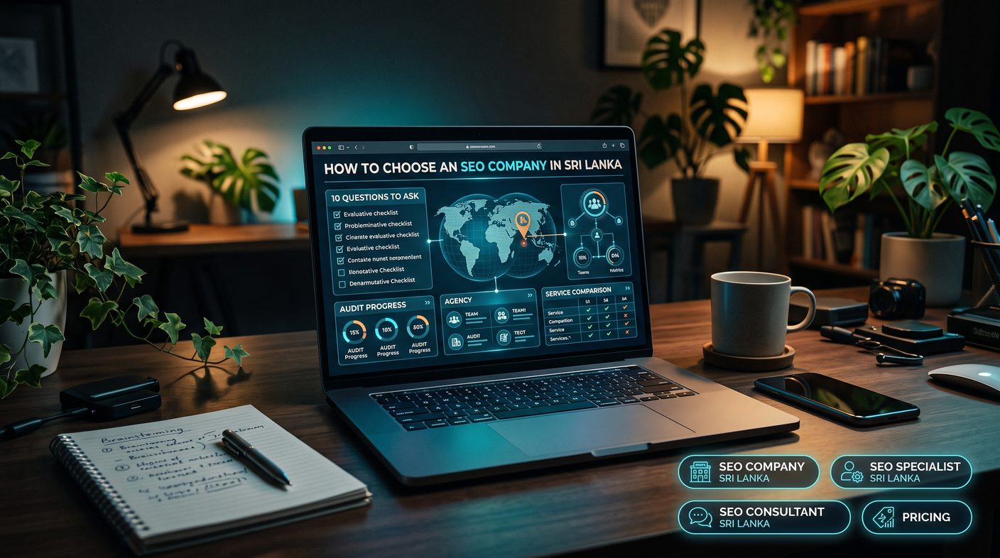
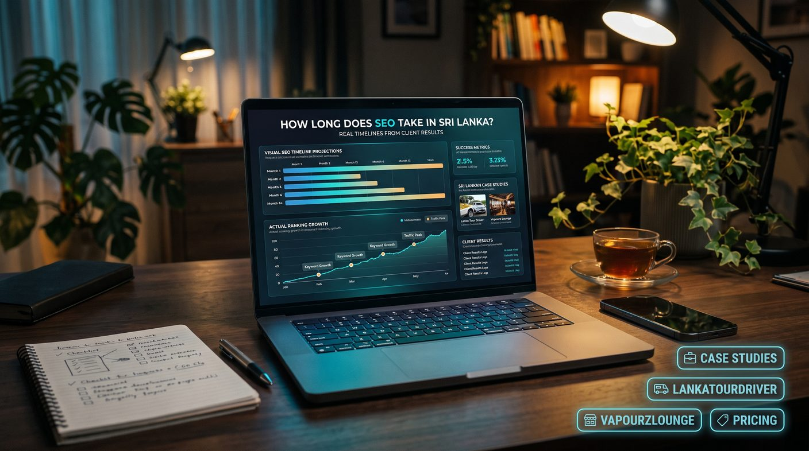

How to Choose an SEO Company in Sri Lanka: 10 Questions to Ask
The questions to ask before hiring any SEO consultant or company: strategy, case studies, pricing, ownership, reporting and red flags.
Read the checklistSearch කරද්දී ඔයාටම හම්බුනා නේද එහෙනම් ඔයා ඉන්නේ හරිම තැන
Hire an SEO consultant in Sri Lanka who does the work himself. I help businesses rank on Google and get cited by AI search through data-backed Technical SEO, Local SEO, Google Entity Stacking and Generative Engine Optimization (GEO). I am Buddhika S Weerasekara, an SEO consultant with 15+ years of experience and Founder of SEO Specialist Sri Lanka.
No agency layers: you consult directly with me, from the first audit to the final report.
Buddhika S Weerasekara is an SEO consultant in Sri Lanka with 15+ years of experience, working since 2010 and based in Narammala. He leads every engagement personally, from audit to reporting, across technical SEO, local SEO, e-commerce SEO and Generative Engine Optimization.
His results are checkable: seven named client case studies with Google Search Console screenshots, including #1 rankings for possystem.lk, gauraconstruction.lk, lankatourdriver.com and themerchlist.com. Packages are fixed-price from Rs. 60,000, and a free SEO audit comes first.
Last updated 15 October 2026. Rankings change and past results are not a promise of future ones.
An SEO consultant is the senior person who works out why your site is not ranking, decides what to fix first and makes sure it gets done. Here is what that looks like in practice when you hire me.
A full SEO audit of crawling, indexing, speed, content and competitors, so the plan starts from evidence and not guesswork.
A prioritised keyword and content roadmap in English, Sinhala and Tamil, matched to your budget and the searches that actually bring customers.
Technical SEO, on-page SEO, authority building and entity optimization, carried out hands-on or guided with your developer.
Local SEO and Google Business Profile work to appear in the Google Map Pack for nearby customers.
Generative Engine Optimization so ChatGPT, Perplexity and Google AI Overviews can identify and cite your brand.
Clear reporting on rankings, traffic and enquiries, plus what changed and what comes next, with no jargon.
All three can be the right choice. This is how they differ on the points that decide whether your SEO actually moves.
| What you get | SEO consultant (me) | Typical SEO agency | Typical freelancer |
|---|---|---|---|
| Who does the work | A senior consultant, directly | Account manager plus rotating team | One person, experience varies |
| Strategy depth | 15+ years across technical, local and GEO | Often template-based | Often one specialism |
| Pricing | Published fixed packages from Rs. 60,000 | Open-ended monthly retainers | Hourly or ad hoc |
| Proof | Named domains with Search Console screenshots | Anonymous or self-reported | Rarely verifiable |
| AI search (GEO) | Included in Growth and Enterprise | Rarely offered | Rarely offered |
Descriptions of agencies and freelancers are general patterns, not claims about any named business. Compare the options in more detail on the SEO company page.
Whoever you hire, check these seven things first. A good consultant will be glad you asked.
Every result below links to a case study with real Google Search Console screenshots and the exact queries.
As a consultant, my job is to give you a clear, checkable answer about your website: what is holding it back, what to fix first, and what each fix is likely to be worth. Buddhika S Weerasekara trained as an engineer and has worked hands-on in SEO since 2010, so every recommendation comes with the evidence behind it.
You can check that approach in the published case studies, each backed by Search Console screenshots, and in client feedback. If an audit shows SEO is not the right investment for you yet, you will hear that too.
Request a Free SEO AuditLed by Buddhika S Weerasekara, SEO Specialist Sri Lanka is the SEO company and consultancy Sri Lankan and international businesses trust — combining technical SEO optimization with entity-driven authority building to help you rank where it matters, and stay there. Whether you need local SEO to win nearby customers, e-commerce SEO for your online store, or international SEO to reach new markets, we cover every district in Sri Lanka. Learn how Google SEO works, or Request a free SEO audit to get started.
Recommendations come from your own Search Console, analytics and crawl data, not a generic checklist, so you know why every task is on the list.
Every finding is ranked by likely impact and effort, so your team or developer knows what to do this week and what can wait.
No link schemes, doorway pages or shortcuts that risk a penalty. Every recommendation follows Google's Search Essentials.
Calls, reviews and questions go to the person who audited your site, not an account manager passing messages along.
Advice that reflects how Sri Lankan customers actually search, including Sinhala and Tamil queries and Google Maps behaviour.
Individually certified in Google, Semrush, HubSpot and Meta tools, with results you can verify in the case studies.
Consulting covers the same ground as full SEO, but the output is expert review and a plan: your own team or developer can carry out the work, or I can implement it as part of a package.
A page-by-page review of titles, headings, content gaps and internal links, with rewritten examples your team can apply. See on-page SEO.
An assessment of your backlink profile and toxic-link risk, plus the PR, citation and entity opportunities worth pursuing, without buying links.
Crawl, indexing, Core Web Vitals and schema issues written up as developer-ready tasks, then re-checked after the fixes go live.
Guidance on how your brand currently appears in Google AI Overviews, ChatGPT and Perplexity, and which content and entity changes give it a better chance of being cited.
Every consulting engagement moves through four steps, from audit to measurable progress.
A full technical, content and competitor audit of your site against the searches that matter to your business.
A plain-language walkthrough of what the audit found and why it matters, so decisions are made with you, not for you.
A ranked action plan with keyword-to-page mapping and the effort each task needs.
I implement the roadmap, or your team does and I review the changes, with progress tracked in regular reports.
Good SEO consulting is not a list of tricks. It is a repeatable system that makes your site easy for Google to crawl, relevant for the searches your customers make, and trusted enough to rank above competitors.
Findings ranked by impact, with screenshots and the exact pages affected, not a long export from a tool. See what a full SEO audit covers and the technical SEO work behind it.
The English, Sinhala and Tamil searches your buyers use, each mapped to one page so your own pages do not compete with each other. Background: keyword research and on-page SEO.
Which links, reviews and brand mentions you realistically need to outrank competitors, and which link offers to ignore. See off-page SEO and link building.
A consultant is the right fit when you already have a website and someone to make changes, such as an in-house marketer or a developer, but need senior judgement on what to change. It also suits businesses that have paid for SEO before and want an independent check of what was done. Local businesses can start with local SEO and the city pages; online stores with e-commerce SEO; exporters with international SEO.
The audit and roadmap come first. Results then depend on how quickly the recommendations are put live: technical fixes can show within weeks, while ranking movement for competitive keywords usually takes three to six months. See the SEO timeline guide, the SEO cost guide, or SEO vs Google Ads.
If you need a large multi-channel team running paid media, social and SEO together, an agency may fit better, and I will say so. If you want senior SEO expertise applied directly to your site, see our guide to the best SEO company in Sri Lanka, then request a free SEO audit and I will tell you honestly where you stand.
Client websites that held the #1 position on Google for these searches when last checked. Each case study shows the dated Search Console data. Rankings change, and past results are not a promise of future ones.
| Client | Market | #1 on Google for | Proof |
|---|---|---|---|
| possystem.lk | POS systems, Sri Lanka | pos system, pos system sri lanka | Case study |
| gauraconstruction.lk | Construction, Sri Lanka | cabana construction in sri lanka, cabana builders in sri lanka | Case study |
| lankatourdriver.com | Tours & travel, Sri Lanka | lanka tour driver, sri lanka private tours with driver | Case study |
| tuktukceylonrides.com | Vehicle rental, Sri Lanka | three wheel for rent, tuk tuk ceylon ride | Case study |
| themerchlist.com | Corporate gifts, Dubai | corporate gifts dubai, senior jacket | Case study |
| mypalmfit.com | Activewear, Dubai | gym clothes dubai, gym wear uae | Case study |
| vapourzlounge.co.uk | Vape retail, London | vapourz lounge, vape shop tooting | Case study |
Three fixed-scope packages, each a one-time fee for a project that typically runs one to six months. No open-ended retainer.
| Package | One-time fee | Keywords | Best for |
|---|---|---|---|
| Starter | Rs. 60,000 | 10 | Fixing the technical and on-page foundation of a site |
| Growth | Rs. 99,999 | 20 | Adding AI search (GEO), entity stacking and authority building |
| Enterprise | Rs. 120,000 | 20 | Businesses that also need Google Business Profile and Map Pack work |

The questions to ask before hiring any SEO consultant or company: strategy, case studies, pricing, ownership, reporting and red flags.
Read the checklist
A month-by-month timeline, how it differs by business type, and documented Search Console results from real case studies.
See the timelineThe 10-step checklist behind a consulting audit: crawling, indexing, redirects, Core Web Vitals, mobile, schema and local SEO.
Read the checklistAn SEO consultant audits your website, finds what is holding back your rankings, builds a prioritised plan and then guides or carries out the work: technical fixes, keyword and content strategy, local SEO, link building and AI search visibility. The difference from an agency is that you deal directly with the person advising you.
Nobody can be named best on an unverifiable claim. The best SEO consultant is the one who shows named client domains with rankings you can check yourself, explains the method plainly and does not guarantee a position. Buddhika S Weerasekara of SEO Specialist Sri Lanka has 15+ years of experience and publishes seven client case studies with Google Search Console screenshots.
SEO Specialist Sri Lanka publishes fixed one-time packages: Starter at Rs. 60,000 for 10 keywords, Growth at Rs. 99,999 for 20 keywords with Generative Engine Optimization, and Enterprise at Rs. 120,000 for 20 keywords including Google Business Profile optimization. Each is a fixed-scope project, typically 1 to 6 months. See the pricing page and the SEO cost guide for how market quotes compare.
An agency usually routes your account through an account manager and a rotating execution team. An SEO consultant is the person who audits, plans and advises you directly, so strategy is not diluted by hand-offs. Agencies suit very large multi-channel programmes; a consultant suits businesses that want senior expertise on their own site. See also the SEO company comparison.
Specialist describes a skillset, such as technical SEO or local SEO. Consultant describes how someone works with you: advising on strategy and often delivering it directly. One person can be both, which is how Buddhika S Weerasekara works. Read more on the SEO specialist page.
Ask for named, checkable case studies, find out who actually does the work, request a free audit before paying anything, get scope and price in writing, confirm you own your site and data, and avoid anyone who guarantees a ranking position or will not explain their methods.
Technical fixes can show movement in four to eight weeks. Low-competition and local terms typically take three to six months, and competitive national terms six to twelve months. A consultant who promises page one in a few weeks is not being honest.
No ethical SEO consultant can guarantee a specific ranking, because search algorithms are outside anyone's direct control. What a consultant can guarantee is a transparent, data-backed process and honest reporting. The case studies on this page show past results, which are not a promise of future ones.
Yes. Generative Engine Optimization (GEO) is part of the Growth and Enterprise packages. It focuses on making your brand clearly identifiable and citable in Google AI Overviews, ChatGPT and Perplexity through entity signals, structured data and answer-ready content.
Yes. SEO consulting is delivered online, so it covers all 25 districts of Sri Lanka, from Colombo, Kandy and Galle to Jaffna and Kurunegala. The consultant is based in Narammala, in the Kurunegala District.
Yes. Case studies include clients in the UAE and the UK. International SEO work uses country-specific keyword research, hreflang configuration and market-appropriate content rather than republishing Sri Lankan pages for a new audience.
Yes. You can request a free SEO audit that reviews your technical SEO health, Core Web Vitals, on-page structure and your biggest ranking opportunities, with no obligation. Use the form on this page or the free SEO checker.